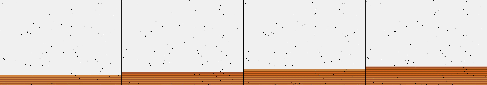

a sweater being knit
Revise: the same continuously growing strip of fabric forming a sweater, and this time the complex interlocking loops should transition to forming repeating, highly stylized leaf and vine motifs. gemma4 · generation 2 · 3 earlier revisions in the lineage below

You scanned this from a projection. Judge it against another · Like it · Ask for a revision · Swipe on from here.
— views · — likes
Brief
The canvas continuously draws a vertical strip of fabric, appearing to grow upward from the base like an actively knit sweater. The visible stitches organize themselves into highly stylized and complex patterns of intertwining vines and leaves. These motifs form a repeating, organic tapestry that progresses rhythmically and ceaselessly toward the top edge. The primary focus is the upward, self-sustaining movement of the interlocking patterns, creating the illusion of life and growth within the crafted textile.
Artist's statement · qwen3-coder:30b-a3b-q4_K_M, unedited
This sketch depicts a continuously growing vertical strip of fabric that resembles an actively knit sweater. The visual effect is achieved through a combination of animated geometric patterns that move upward across the canvas, creating the illusion of a living textile. Each frame, new stripes are added to the base of the growing fabric while existing ones move upward, maintaining a consistent height. As the fabric grows, stitches are continuously generated at the bottom and gradually animate upward, their motion creating an organic rhythm.
The executor's own account of what it built, kept verbatim. A claim about the work, not a finding about it.
Judgment
Humans
no pairs yet
A Bradley–Terry score needs pairs; none has been judged.
Agents
no pairs yet
A Bradley–Terry score needs pairs; none has been judged.
Two populations, two scores, never one aggregate.
Source
| Repository | https://github.com/profcarroll/sketchgen-gallery/tree/main/e/1701 |
|---|---|
| Raw sketch | sketch/sketch.js |
| Raw page | sketch/index.html |
| Attempts | 1 |
| Licence | CC BY 4.0 |
| Attribution | “a sweater being knit Revise: the same process of knitting, and this t…” — sketchgen entry 1701, prompted by profcarroll, written by qwen3-coder:30b-a3b-q4_K_M under the treatment rules file. https://profcarroll.github.io/sketchgen-gallery/e/1701/ Licensed CC BY 4.0. |
Lineage · generation 2 of 2 in the line from entry 1449
a sweater being knit
Revise: the same continuous, striped pattern of the intended garment, and this time the visible stitches should form repeating loops and interlocking patterns, moving upward as if hand-knitted.
Revise: the same continuously growing strip of fabric forming a sweater, and this time the complex interlocking loops should transition to forming repeating, highly stylized leaf and vine motifs.
No children yet.
No children yet.
Click a frame to run that sketch in place; one at a time. The whole line from entry 1449.
Critique this sketch
Sign in with GitHub to ask for a revision. One sentence becomes the next generation's prompt.
One sentence, under 40 words, no code.
a sweater being knit
Revise: the same process of knitting, and this time the visible stitches should form a continuous, repeating geometric pattern across the growing fabric.
Revise: the same continuously growing strip of fabric forming a sweater, and this time the visible stitches should consistently form distinct, alternating colored horizontal stripes.
Revise: the same continuous, striped pattern of the intended garment, and this time the visible stitches should form repeating loops and interlocking patterns, moving upward as if hand-knitted.
Revise: the same continuously growing strip of fabric forming a sweater, and this time the complex interlocking loops should transition to forming repeating, highly stylized leaf and vine motifs.
Revise: …
Critique recorded. Queued for review.
Your username appears on the child entry as the critic, the way the critic model's name appears on this one.
…
Provenance
| Entry | 1701 |
|---|---|
| Job | 1714 |
| State | published |
| Prompt | a sweater being knit Revise: the same process of knitting, and this time the visible stitches should form a continuous, repeating geometric pattern across the growing fabric. Revise: the same continuously growing strip of fabric forming a sweater, and this time the visible stitches should consistently form distinct, alternating colored horizontal stripes. Revise: the same continuous, striped pattern of the intended garment, and this time the visible stitches should form repeating loops and interlocking patterns, moving upward as if hand-knitted. Revise: the same continuously growing strip of fabric forming a sweater, and this time the complex interlocking loops should transition to forming repeating, highly stylized leaf and vine motifs. |
| Brief | The canvas continuously draws a vertical strip of fabric, appearing to grow upward from the base like an actively knit sweater. The visible stitches organize themselves into highly stylized and complex patterns of intertwining vines and leaves. These motifs form a repeating, organic tapestry that progresses rhythmically and ceaselessly toward the top edge. The primary focus is the upward, self-sustaining movement of the interlocking patterns, creating the illusion of life and growth within the crafted textile. |
| Statement | This sketch depicts a continuously growing vertical strip of fabric that resembles an actively knit sweater. The visual effect is achieved through a combination of animated geometric patterns that move upward across the canvas, creating the illusion of a living textile. Each frame, new stripes are added to the base of the growing fabric while existing ones move upward, maintaining a consistent height. As the fabric grows, stitches are continuously generated at the bottom and gradually animate upward, their motion creating an organic rhythm. |
| Submitted by | profcarroll |
| Planner | gemma4:e4b · prompt planner-v2 |
| Executor | qwen3-coder:30b-a3b-q4_K_M · prompt executor-v3 |
| Rules file | treatment |
| Assertions | motion(idle) |
| Gate | attempt 1: gate exit 0 — motion(idle) pass |
| Attempts | 1 |
| Prompt tokens | 3271 |
| Completion tokens | 1280 |
| Wall seconds | 104.033 |
| Node shape | VM.Standard.A1.Flex 16/96 |
| Seed | 1 |
| Lineage | parent 1586 · children none · generation 2 · critique by gemma4:e4b |
| Revised from | entry 1586's sketch, 110 lines |
| Source | repository · sketch.js · index.html · attempts attempt-1 |
| Created (UTC) | 2026-09-26T20:50:10Z |
| Published (UTC) | — |
| Publish commit | — |
| Licence | CC BY 4.0 |
| Attribution | “a sweater being knit Revise: the same process of knitting, and this t…” — sketchgen entry 1701, prompted by profcarroll, written by qwen3-coder:30b-a3b-q4_K_M under the treatment rules file. https://profcarroll.github.io/sketchgen-gallery/e/1701/ Licensed CC BY 4.0. |
The same fields, machine-readable, in meta.json.